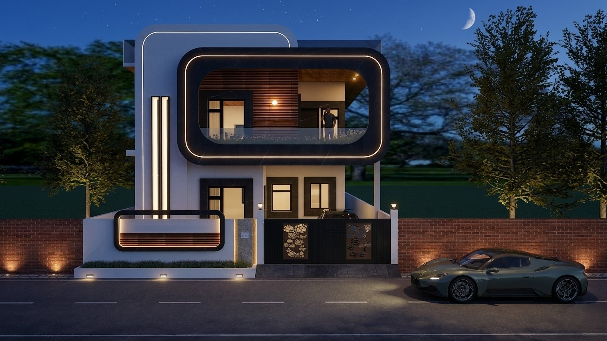
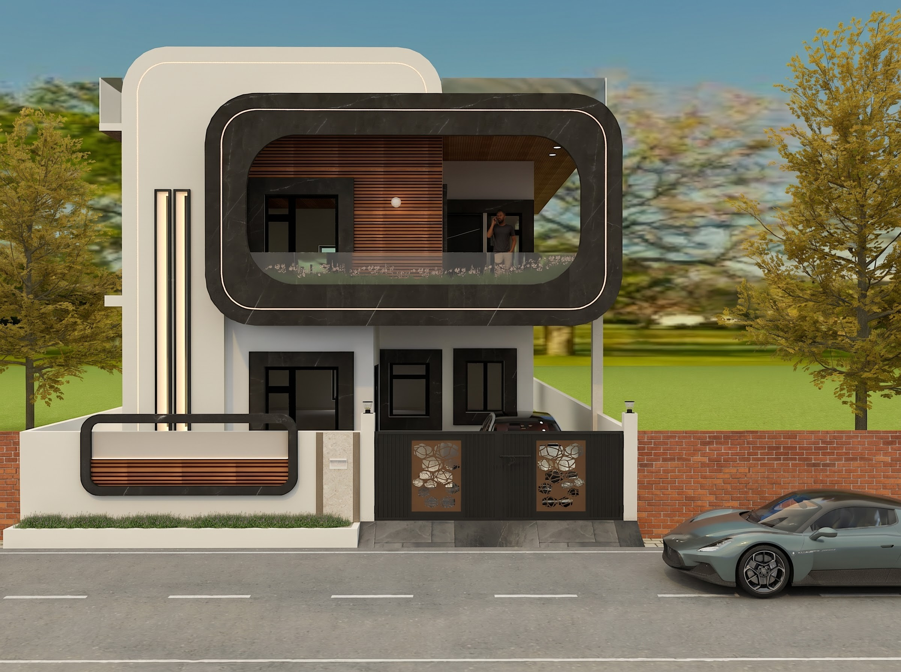
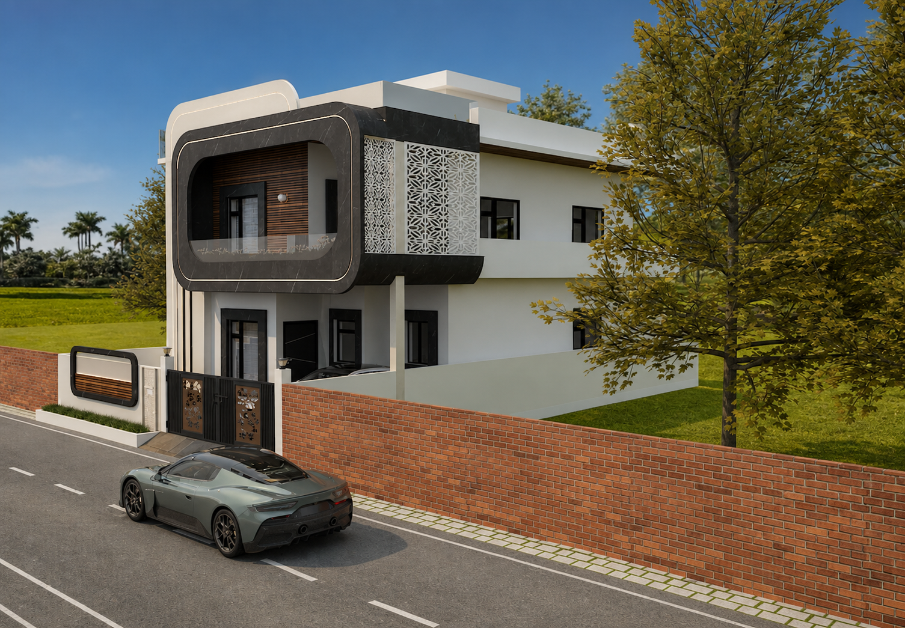
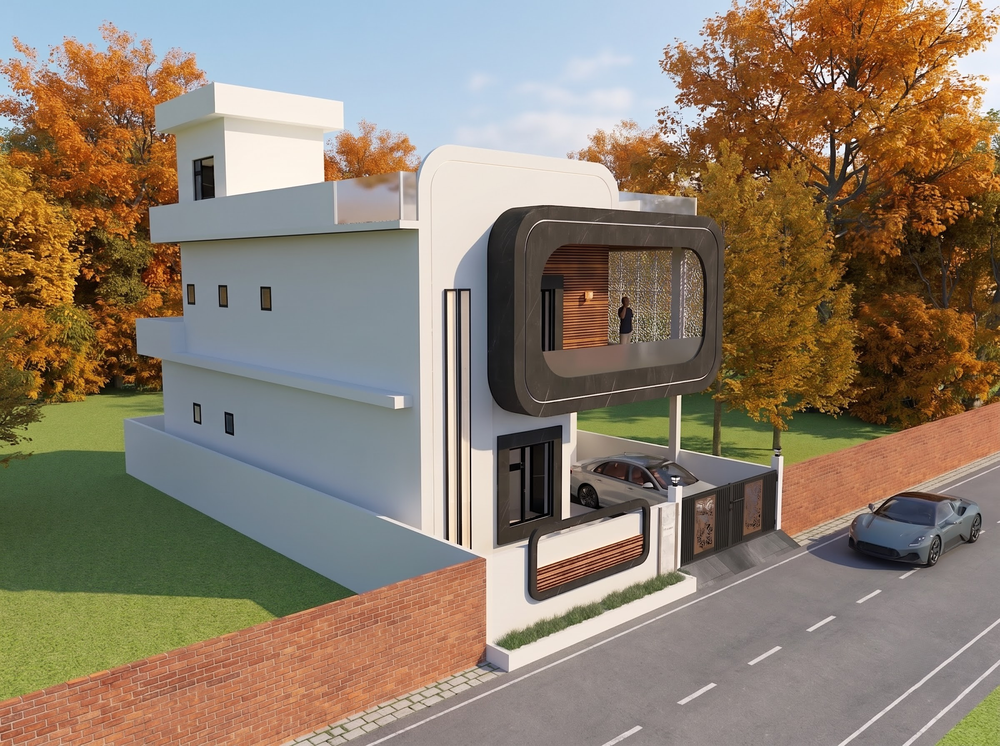

Black Granite Frame
The rounded black granite feature anchors the composition, catches changing daylight and gives the balcony a durable, low-maintenance edge.
Use: upper facade and balcony frame

A contemporary Dehradun home where one bold rounded black frame becomes the family’s identity. The cantilevered balcony shades the car porch, frames the view and gives the street a landmark.
Chapter 01
This modern house design in Dehradun is organised around one decisive gesture: a rounded black granite frame that unifies the upper facade and creates a memorable address for the family.
Its cantilevered balcony protects the car porch below while creating a shaded outdoor threshold above. The frame is not decoration alone; it gives the elevation depth, shelter and a clear street presence.
The result is a 3650 sq ft house design with a strong identity, practical everyday planning and a calm material palette that feels at home in Dehradun.
“A single, well-proportioned frame can give a family home both character and useful shade.”
Chapter 02
The rounded black granite feature anchors the composition, catches changing daylight and gives the balcony a durable, low-maintenance edge.
Use: upper facade and balcony frame
Warm wooden louvers bring scale and texture to the elevation while helping manage privacy and the strong western light.
Use: privacy and facade accents
A restrained rustic finish softens the dark frame, creating depth without demanding frequent upkeep.
Use: primary facade planes
The first-floor balcony extends over the car porch to make the frontage work harder: it shades arrival, gives the family an outdoor room and adds a strong horizontal layer to the house elevation design in Dehradun.
Vertical LED slots bring a precise evening rhythm to the facade, while the rooftop terrace opens to the sky behind a glass railing. A jaali privacy screen filters views where the home meets the street.
Chapter 04
The gallery begins with the hero facade and moves through the project’s alternate views, showing how the black granite frame, wooden louvers, balcony, terrace and privacy layers form one composed home.



Chapter 05
For Dehradun’s changing sun, rain and close urban streets, the facade pairs useful shade with privacy and resilient materials. The projecting balcony cuts glare over the porch, the louvers and jaali screen temper exposure, and the black granite and rustic paint finish offer a composed, low-maintenance exterior.
It is a residential architect’s response to the local climate: enough openness for light and terrace living, enough screening for comfort, and a clear modern identity that will stay relevant over time.